Definição de Conjuntos
Um conjunto tem por definição ser um grupo de elementos, para conseguir represtar isto
usamos uma série de símbolos para indicar se "x" pertence ao conjunto
Conjunto de vogais A={x| x é uma vogal} ou A={a, e, i, o, u}
Conjunto dos números pares positivos
B {x| x é um número par positivo} ou B={2, 4, 6, 8, 12...}
Usa-se reticências no final para indicar que o conjunto é infinito, quando usado no meio
indica que existem muitos outros elementos antes de chegar no ultimo
EX: Conjunto dos múltiplos de 6 até 600 D={x| x é um múltiplo de 6 e 0 ≤ x ≤ 500} ou
D={0, 6, 12, 18, 24,...600}
Os conjuntos podem ser interpretados como uma relações de pertencimento
pertence => ∈
não pertence => ∉
|
Também podemos representar os conjuntos numéricos por uma área fechada (linha) e
organizando os pertencentes dentro desta área e os não pertencentes fora
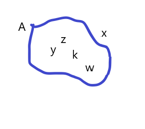
x ∉ A
Y ∈ A
Z ∈ A
W ∈ A
K ∈ A
Existem casos onde o conjunto poderá ser encontrado variu ou apenas com um elemento,
então chamamos de conjunto vazio( { } ou ∅) ou conjunto unitário.
Por exemplo um conjunto Solução de uma equação onde será obtido apenas um resultado
por exemplo:
3x + 1 = 10 {3}
Subconjuntos: é quando todos os elementos de A também pertencem a B, para isto falamos
que está contido ou não está contido.
Está contido => ⊂
Não está contido => ⊄
Contém => ⊃
Não contém => ⊅
Para estabelecer essa relação usamos as notações:
𝑨 ⊂ 𝑩 -> “A está contido em B” ou “A é subconjunto de B”
ou
𝑩 ⊃ 𝑨 → “B contém A” (Conteúdo retirado do arquivo da professora)
|
Conjuntos Numéricos
O agrupamento dos números conforme suas carecterísticas
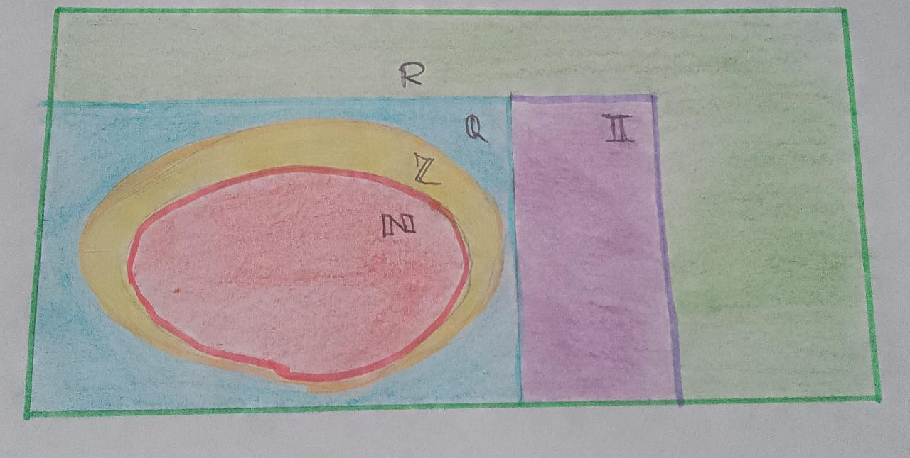
Números Naturais
ℕ = {0,1,2,3,4,5,6,7,8,9,...}
O peimeiro número é o zero, o segunfo o 1 e depois o 2. Para obter o sucessor
somando n + 1, tornando o conjunto infinito.
Subconjunto = ℕ* - isto exclui o zero, tornando:
ℕ* = ℕ - {0} = {1,2,3,4,5,6,7,8,9,...}
2º Subconjunto ℕ números pares
P = {0,2,4,6,8,10,...} ou P={2n; n ∈ ℕ }
Números Inteiros
O conjunto dos números inteiros:
ℤ = {… , −4, −3, −2, −1, 0, 1, 2, 3, 4, … }
Números Racionais
Os números racionais são aqueles que podem ser representados como recepção, ou seja,
um número que pode ser expresso na forma p/q, onde peq são números inteiros eq é
diferente de zero.
Os números racionais incluem tanto números inteiros como números fracionários e
podem ser representados em uma reta numérica.
Operações entre conjuntos
União ou Reunião
Quando queremos juntar dois conjuntos: usa-se o símbolo ∪
𝐴 ∪ 𝐵 = {𝑥 | 𝑥 ∈ 𝐴 𝑜𝑢 𝑥 ∈ 𝐵}
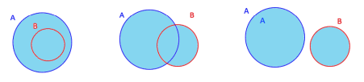
Intersecção
A relação entre dois conjuntos, usa-se o símbolo ∩
Exemplo: Sejam 𝐴 = {1,2, 3, 4, 5} 𝑒 𝐵 = {4, 5, 6, 7}, 𝐴 ∩ 𝐵 = {4, 5}
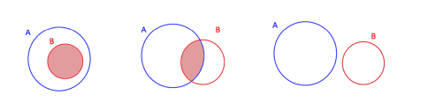
Diferença
A diferença entre dois conjuntos:
Exemplos:
Sejam 𝐴 = {1,2, 3, 4, 5} 𝑒 𝐵 = { 2, 3}, 𝐴 − 𝐵 = {1, 4, 5}
Sejam 𝐴 = {−2, 3, 6, 9, 10, 20, 55} 𝑒 𝐵 = { 0, 1, 3, 9, 20, 60}, 𝐴 − 𝐵 =
{−2, 6, 10, 55}
Formalmente, o conjunto diferença entre A e B é dado por
𝐴 − 𝐵 = {𝑥 | 𝑥 ∈ 𝐴 𝑒 𝑥 ∉ 𝐵}
Nos diagramas abaixo, a diferença entre A e B está pintada de verde.
(Trecho retirado do arquivo da professora)
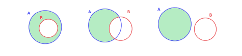
Intervalos reais
Representado por um reta oque está contido em certo intervalo;
- A reta pode ser representada como intervalo Aberta, fechada, Aberta a direita e
fechada a esquerda, Aberta a esquerda e fechada a direita, semirreta esquerda fechade de
origem B, Semirreta direita fechada de origem a, semirreta direita aberta de origem a,
reta real.
A seguir as imagens representando estas retas, todas retiradas do arquivo da professora:
a- Intervalo Aberto
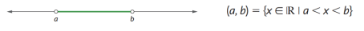
b- Intervalo fechado
c- Intervalo fechado à esquerda e aberto à direita
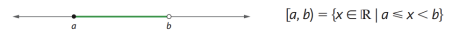
d- Intervalo fechado à direita e aberto à esquerda
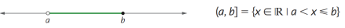
e- Semirreta esquerda, fechada, de origem b
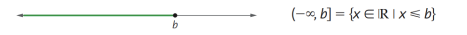
f- Semirreta esquerda, aberta, de origem b
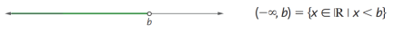
g- Semirreta direita, fechada, de origem a
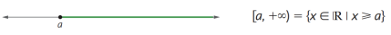
h- Semirreta direita, fechada, de origem a
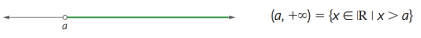
i- Reta real
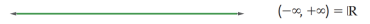
Para representar um intervalo graficamente usamos alguns símbolos:
Intervalo aberto: () ][ > <
Intervalo fechado: [] ≥ ≤
|
|